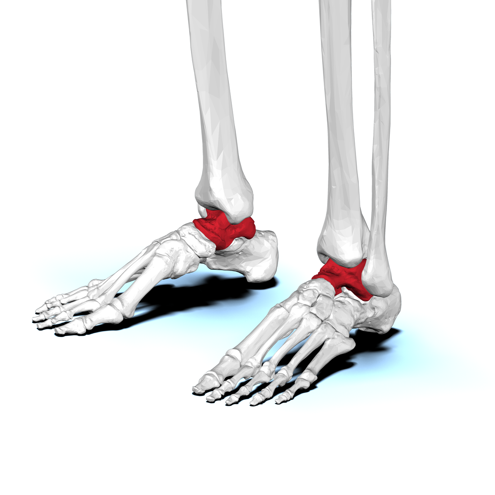

Activité 1
Trouver l'astragale
- Talus humain.
- Pied et squelette de mouton.
- Schéma ancien de jambe de vache.
- Planche comparative ancienne contextualisée.
- Fiche élève, guide enseignant et support images.
Prêt à tester avec relecture adulte.
Images, cartes et planches
Images, cartes, planches et ressources visuelles à projeter, imprimer ou utiliser pendant les activités. Chaque support conserve ses légendes, ses crédits et son statut de validation.
Statut : l'activité 1 est prête à tester avec relecture adulte. Les supports des activités 2 à 4 peuvent servir à tester la méthode, avec les corpus ou objets manquants clairement signalés.

Talus humain, pied de mouton, squelettes et comparaisons animales.

Cartes animaux, cartes objets, cartes de chronologie et supports à découper.

Planches anciennes, images commentées et supports de discussion contextualisés.
Ressources en préparation : modèles à vérifier avant publication.
Auteurs, licences, provenance des images et limites d'usage.
Versions HTML imprimables et PDF de travail pour les tests internes.
Activité 1
Prêt à tester avec relecture adulte.

Activité 2
Support pilote : méthode testable, corpus d'os A-D à compléter.

Activité 3
Support pilote : images commentées utilisables, corpus antique à compléter.
Activité 4
Support pilote : méthode testable, objets A-E à compléter.
Versions HTML imprimables et PDF de travail pour tester les activités, préparer les séances et relire les supports. Les PDF WIP ne constituent pas des versions finales.
Activité 1
HTML imprimables :
PDF WIP :
Activité 2
HTML imprimables :
PDF WIP :
Activité 3
HTML imprimables :
PDF WIP :
Activité 4
HTML imprimables :
PDF WIP :
Des modèles 3D sont en cours de vérification. Ils seront publiés uniquement lorsque les droits, les crédits et l'usage pédagogique seront confirmés. Aucun modèle Sketchfab ou MorphoSource n'est intégré dans cette version.
Les crédits détaillés figurent sous chaque image et dans les pages d'activités. Parmi les sources publiques utilisées : BodyParts3D / DBCLS, Caroline Eroline, Museum of Veterinary Anatomy FMVZ USP, Antoine Borel, Peter Paul Rubens et Alexander Rothaug.
Pour comprendre les statuts, les droits et les limites scientifiques, consulter la page Approfondir.